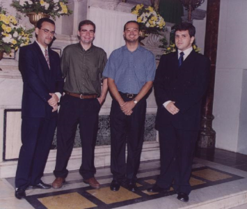
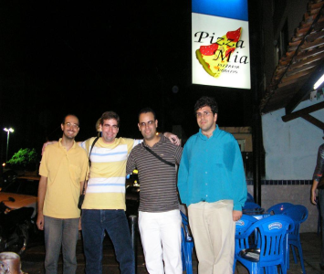
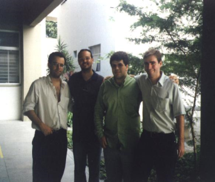

História
Os Federa são um grupo de quatro amigos que fizeram o curso de Ciência da Computação na Unicap – Universidade Católica de Pernambuco, entre os anos de 1997 e 2001. O nome surgiu a partir da idéia do federa Nélio no primeiro semestre de 2001 e até hoje os amigos são assim chamados.



Da amizade nasceu uma série de jogos fantásticos, com personagens que entram em um universo de heróis já conhecidos, introduzindo uma nova saga de heróis incríveis, tendo seu principal grupo, nada mais nada menos do que: